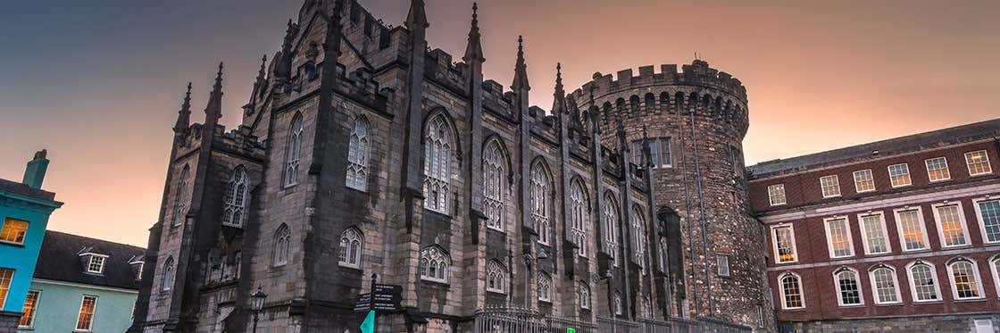
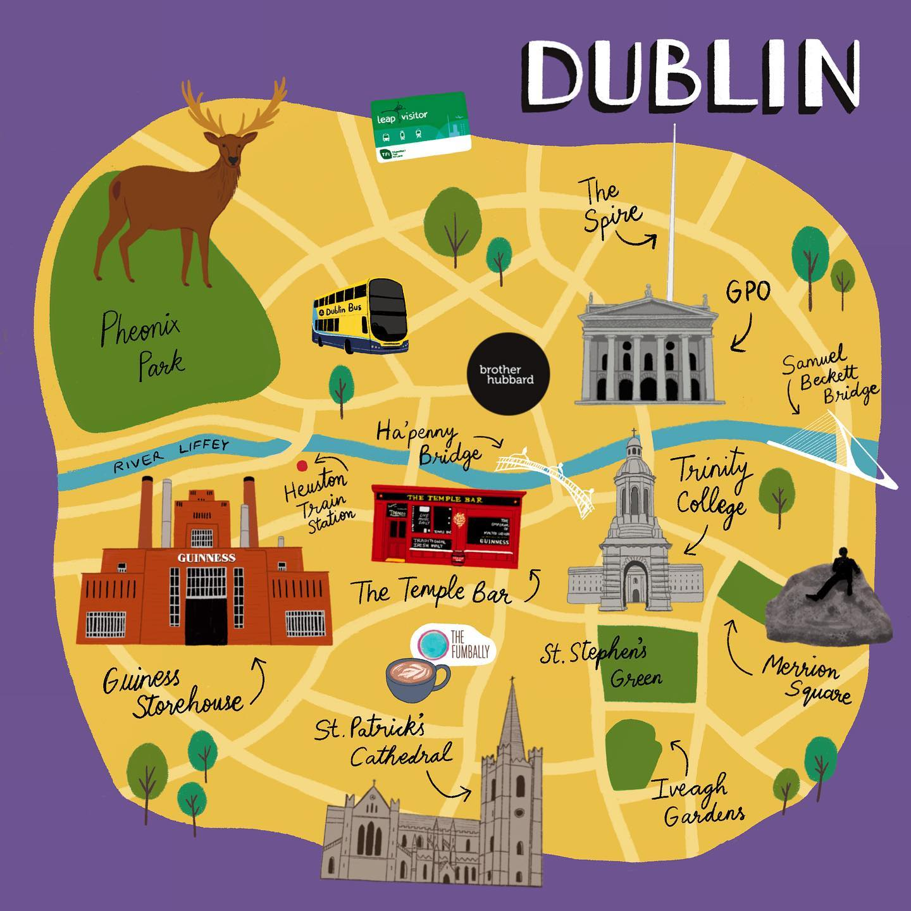

Dublino, capitale della Repubblica d'Irlanda, si trova sulla costa orientale dell'Irlanda, alla foce del fiume Liffey. I suoi edifici storici più importanti sono il castello di Dublino, risalente al XIII secolo, e l’imponente Cattedrale di San Patrizio, fondata nel 1191. I parchi della città comprendono il paesaggistico St. Stephens Green e l’enorme Phoenix Park, all’interno del quale si trova lo Zoo di Dublino. Il Museo nazionale d'Irlanda documenta il patrimonio culturale irlandese.

CASTELLO DI DUBLINO
CHIUSO!
Il Castello di Dublino (Dublin Castle) è il cuore della Dublino storica ed è uno degli edifici più importanti della storia irlandese. La città prende il nome dal Black Pool, Dubh Linn, che si trovava sul sito dell’attuale giardino del castello, dove il fiume Liffey incontrava il fiume Poddle. Si presume che la fortificazione originale sia stata un antico forte ad anello gaelico, seguito da una fortezza vichinga. Dal 1204 al 1922 fu sede del dominio inglese e poi britannico in Irlanda. Infatti la fortezza normanna, voluta da Giovanni Senza Terra, è stata per molto tempo il simbolo dell’oppressione inglese. Con le sue quattro torri d’angolo, i bastioni e i fossati, ha sofferto numerosi attacchi, tra cui quello di Silken Thomas Fitzgerald, suddito ribelle della Corona. Non pensate però al classico castello medievale: venne ideato più come residenza che come maniero. Infatti dopo che un incendio, nel 1684, distrusse gran parte del Castello Medievale, i magnifici Appartamenti di Stato furono costruiti come quartieri residenziali della corte vicereale. Ora sono la sede di inaugurazioni presidenziali, visite ufficiali di stato, funzioni statali, mostre e altri eventi.


TRINITY COLLEGE
Il Trinity College di Dublino è la più antica università d’Irlanda, fondata dalla regina Elisabetta I nel 1592: venne istituita con carta reale e modellata nello stile delle università di Oxford e Cambridge. Originariamente situato a una certa distanza a est della città fortificata, sul sito dell’ex Priorato di All Hallows, il Trinity College si trova ora nel cuore di Dublino, di fronte allo storico Parlamento. L’ingresso principale del College Green vanta un magnifico arco frontale e un portale in legno. La piazza acciottolata si aprirà davanti a voi con il Campanile al centro, fiancheggiato da edifici in pietra con portali ad arco e colonne doriche. Tra questi c’è l’Old Library Building, che ospita il Book of Kells, uno dei più grandi tesori culturali d’Irlanda. Potrete ammirare il famoso manoscritto medievale, realizzato a mano oltre 1.000 anni fa, rimarrete incantati dai colori squisiti e dalle intricate decorazioni del libro. Infine visiterete la magnifica Long Room, un’incredibile biblioteca che ospita 250.000 libri e documenti storici, tra i più antichi d’Irlanda.
PHOENIX PARK
ATTRAZIONE FRIGNOTTA!
Il Phoenix Park (irlandese: Páirc an Fhionn-Uisce, "Parco dell'Acqua Limpida"), è un parco cittadino situato a 3 km a nord-ovest del centro di Dublino, capitale della Repubblica d'Irlanda. Ricco di prati e viali alberati, esteso 712 ettari, è delimitato da una cinta muraria di 16 km di perimetro. Il parco ospita anche una colonia di daini. Si tratta di uno dei maggiori parchi recintati d'Europa, più esteso sia del Central Park di New York che dell'Hyde Park di Londra. Il Richmond Park di Londra supera il Phoenix Park di soli 2 km².